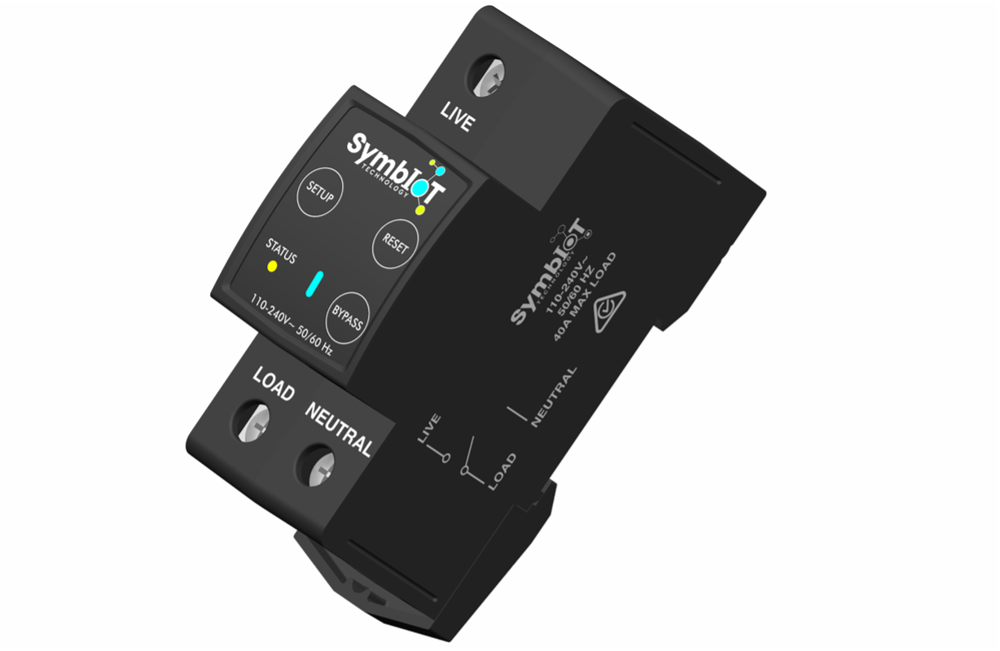
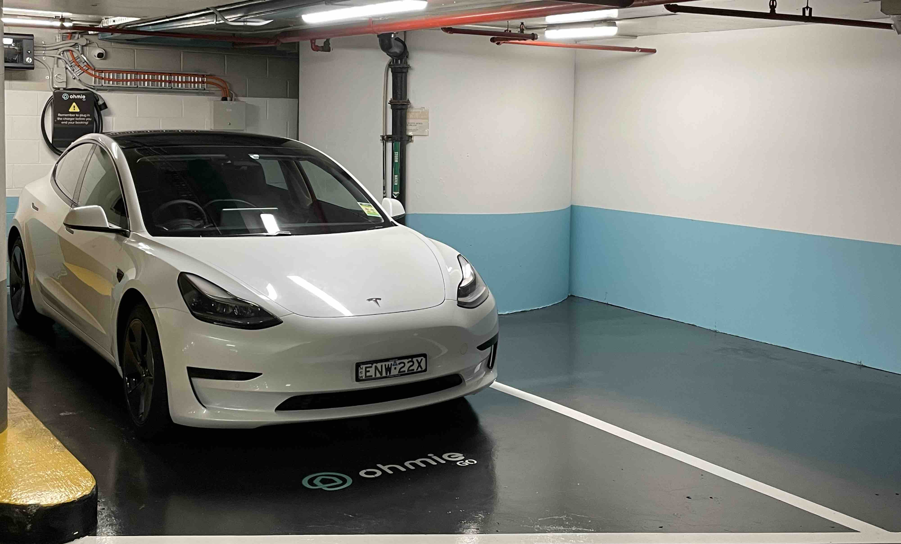
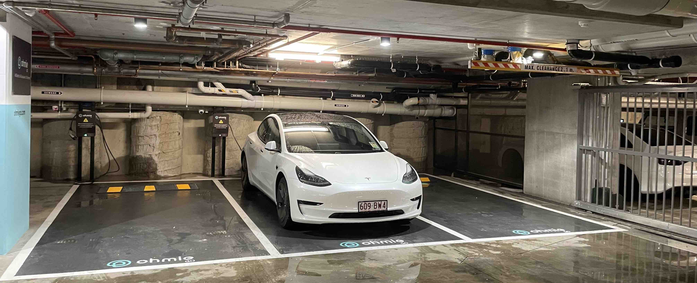

Summary of Products and Projects
Electronics Device Case Study - Voltro
 Voltro is a 2 module DIN-rail mounted WiFi enabled energy monitoring and current sensing device with capabilities of switching 60 A at 240 VAC. It was the first product I had created as an electrical engineer and required knowledge of reflow soldering, surface mount assembly, WiFi integration, high to low voltage isolation and instrumentation, rigid-flex PCBs, interconnects and RCM/ACMA approval as a non-declared article. It was successfully deployed in over 200 homes in South Australia and NSW and is still in use today. During the launch of this product I had learned a lot about customer support, contractor and installer support, procurement and logistics and managing and mitigating risks.
Site Deployment Case Study - Grosvenor Tower
 This was one of the first corporate sites that were deployed. As this building was owned by the GPT group, there were some new challenges to meet such as meeting compliance requirements, liasing with contractors and suppliers to logistically arrive on time and on-site, making sure there was a coordinated effort for the site launch including but not limited to, printing signage, printing collateral, paint materials, electrical equipment and site assets, vehicle setup, API coordination, backend management, licensing and community approval, liasing and coordinating with building and facilities management, budgeting, deadlines and larger style project management tools.
Site Maintenance Case Study - The Standard
 Due to inclement weather and rotating schedules a storm hit Brisbane, which housed one of our major residential deployments. At risk was over $ 300k AUD worth of equipment, labour and materials. I travelled on-site to tackle the challenges that came from imminent flooding. Luckily due to friendly relations with the developer and ongoing communication between the client, stakeholders and end users, residents experienced minimal disruption to their services with the risk being mitigated by moving the vehicles to safe locations and powering down non-essential equipment.
Electronics Products
Please note that many skills/technologies are duplicated across products so in the interest of brevity I will only list new or novel skills and technologies for each product.
| Name | Description | Skills/Technologies | Status |
|---|---|---|---|
| Voltro | 2 module DIN rail mounted WiFi IoT energy monitoring and control device 240 VAC, 60 A capable. | High voltage and current, instrumnetation, analog/digital, WiFi, EMC, rigid-flex, connectors, industrial design, serialising enclosures, assembly, manufacturing, relays, led animations, logos, stickers, RCM, ACMA, reflow soldering, circuit safety | Market - Certified |
| HVAC Controller | Suite of hardware IoT products to bring a HVAC system to the cloud, controls heat pump, valve, thermostats via relays, modbus and temperature sensors. | Modbus, variable voltage valve control, multiple relays, sensors, thermistors, EMC, WiFi, soft AP, device orchestration, digital signal multiplexing, dc/dc switching | Market - Certified |
| Secure Access Strike Lock | IoT security system with NFC fob, WiFi, Bluetooth capability and push to release button with animated illumination. | NFC, encryption, fobs, Bluetooth, i2c, SPI, USB, Wiegand protocols, 8P8C/Ethernet, multi-voltage | Pre-production |
| Smart Home Controller | Central control unit for blinds, windows and doors. Includes multiple relays, sensors and third party API integrations. | Smoke alarms, isolated inputs and outputs, mains interconnect, isolated power transfer | Market - Certified |
| Smart Plug | A small smart plug capable of switching and monitoring up to 10 A, dual pole. IP68 rated. | Highly specialised enclosure, adverse environment (IP rating), bus bar management, AS/NZS 3112, 3114, light tubes, animations, tight tolerance designs, wave soldering | Prototype - Sample |
| Smart Distribution Board | A smart distribution board for DIN rail mounted circuits. Can do 60 A per circuit with energy monitoring. Animated lighting and soft closing mechanisms. | Large voltage and current control, large terminal terminations, analog signal multiplexing | Prototype - Sample |
| e-Bike Dock | A charging and locking dock for bikes. | Asset tracking, microswitches, DC current measurement, state space event management, meshing, ESP-NOW, welding, powder-coating, sheet folding, crimping, software timers, animation synchronising | Market - Certified |
| Power Bar | A modular smart socket bar capable of 10 A switching and monitoring. | Modular design, AS/NZS 3000, Molex connectors, daisy-chaining, fault signalling, PTC resettable fusing | Pre-production |
| Vehicle Access Control and Tracking | A car vehicle tracking and control device. | Bluetooth beaconing, GPS, 4G mobile, SIM, antenna matching, automotive standard, CANbus | Pre-production |
Platforms
| Name | Description | Technical Skills | Status |
|---|---|---|---|
| Ohmie GO | An app for booking shared electric vehicles, electric vehicle chargers, e-Bikes and shared power ports for users. Includes administrative backend for verification and report generation. | AWS, DotNet, Flutter, iOS, Android, app development, web development, react, js | Production |
| Ohmie HOME | A centralised software platform to aggregate smart home devices for either accessible use or for utilities to control via demand response events. | Ruby on Rails, packages, versioning, front end, HTML, CSS, web application, API, automations, predictive algorithms, database, postgress sql | Production |
| Thingsboard | Middleware self-hosted manager for IoT devices, handles encryption, reporting, diagnostics and dashboards with firmware release management and device operational status. | MQTT, IoT, microcontrollers, certificates, SSL, encryption, soft AP, EEPROM, NAND flash, gateway, OCPP, staging | Production |
| Home Assistant | Smart home device aggregator for smart home automation. | Cloudflare, production deployment, smart home integration, smart home protcols, matter, WiFi, Zigbee, Bluetooth, python, config | Production |
| GitLab | Selfhosted server for git commits - features version control for code and PCB board designs alike. | Self hosting, databases, ansible, git, version control, access hierarchy, access management | Production |
| Google Home - Amazon Alexa | I've tinkered with a few Google Home integrations and Amazon Alexa skills. | Cloud, GCP, Alexa, voice assistant | Pre-production |
| Jumpbox | Secure middle server to manage access to servers through an intermediary. | Security, good production practices, SSH, SCP, bash, zsh | Production |